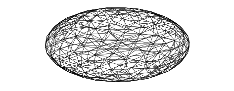
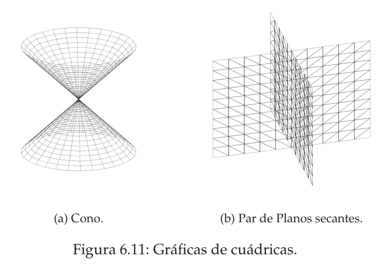
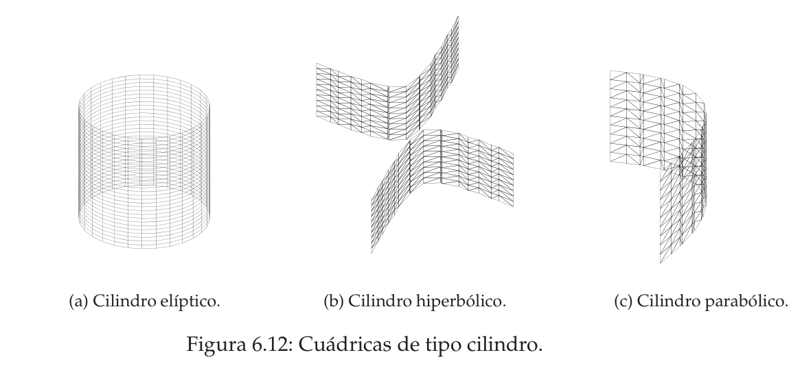
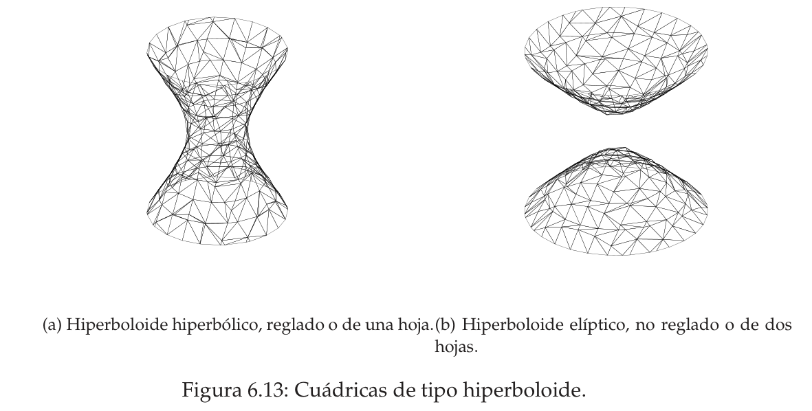
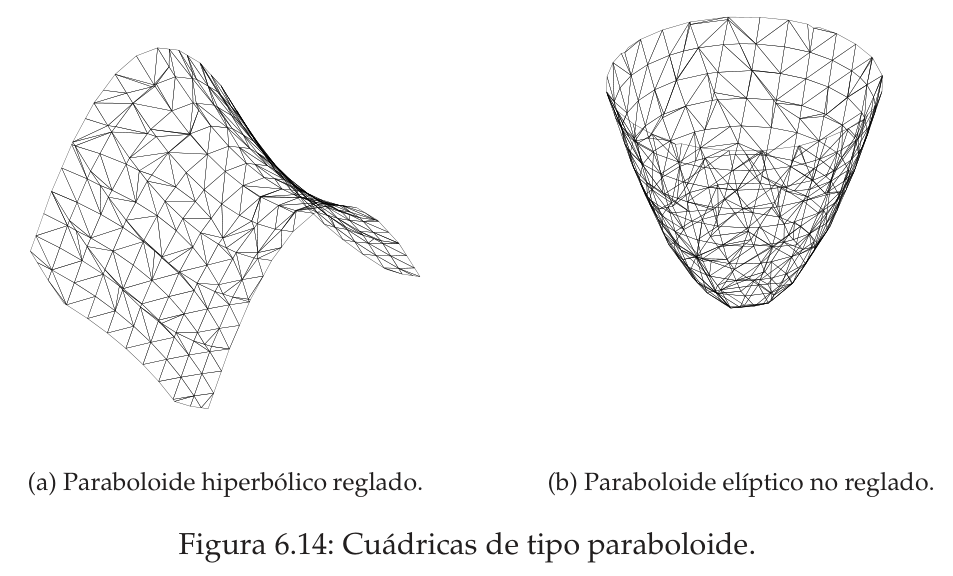

Cuádricas
Una cuádrica es la «cónica del espacio»: la superficie de $\mathbb R^3$ que cumple una ecuación de segundo grado en $x_1,x_2,x_3$ (elipsoides, hiperboloides, paraboloides, conos, cilindros…). Aprenderás los dos caminos que ya conoces de las cónicas, ahora con una matriz $4\times4$: mover los ejes (un giro que elimina los productos cruzados y una traslación que elimina los términos lineales, hasta la ecuación reducida) y clasificar sin dibujar, con cuatro números que no cambian al mover los ejes (los invariantes $\operatorname{rang}A$, $I_a$, $A_{00}$, $J_a$).
0Antes de empezar U p.289
Todo lo que hiciste con cónicas en el tema 6.4 se repite una dimensión más arriba. Una cuádrica es una superficie definida por una ecuación de segundo grado en tres variables. Igual que las cónicas eran elipses, hipérbolas y parábolas, las cuádricas son elipsoides (un balón de rugby), hiperboloides (una torre de refrigeración, o dos «cuencos» enfrentados) y paraboloides (una antena parabólica, o una silla de montar), más los degenerados (conos, cilindros, pares de planos). Si la superficie está torcida y desplazada, la ecuación sale enrevesada; para entenderla la giras (se elimina todo $x_ix_j$) y la centras (se eliminan los términos lineales). Y hay un atajo: cuatro números de la ecuación original que no cambian al girar ni trasladar bastan para saber qué superficie es sin dibujarla. Hay una conexión directa con las cónicas: la sección de una cuádrica por un plano es una cónica.
U p.289 propioQué necesitas saber ya
- Del tema 6.4 (cónicas): todo el método: matriz asociada con $a_{00}$ arriba a la izquierda, giro + traslación, invariantes y cuadro de clasificación. Aquí es lo mismo con una fila y una columna más. Léelo antes: aquí se da por sabido.
- Del tema 5.3: una matriz simétrica real $M$ se diagonaliza con una matriz ortogonal $P$ (columnas = vectores propios unitarios y perpendiculares) y sus valores propios son reales. En $3\times3$ hay que saber hacer Gram-Schmidt si un valor propio es doble.
- Del tema 6.3: los signos de los valores propios de $M$ (signatura). Las superficies $Q(x)=c$ de allí son las cuádricas centradas en el origen y ya giradas: son el caso más fácil de este tema. Del 6.2: pasar de un polinomio a su matriz simétrica (el cruzado se reparte a medias).
- Del 1.3: determinantes $3\times3$ y $4\times4$ (hacer ceros y desarrollar por adjuntos) y rango como orden del mayor menor no nulo.
Mapa del tema
| Apartado | Qué contiene | Dónde |
|---|---|---|
| 1 Ecuación general | Def. 6.20-6.21: $X^tAX=0$ con $X=(1,x_1,x_2,x_3)^t$; partes cuadrática, lineal y constante; Ej. 6.37-6.39 | U §6.5.2, p.289-291 |
| 2 Ecuaciones reducidas | Def. 6.22: los tipos de cuádrica; figuras 6.10-6.14; animación 3D | U §6.5.3, p.292-295 |
| 3 Giro y traslación | Obtención de la reducida; Ej. 6.40 de U completo; animación 3D | U §6.5.3, p.295-298 |
| 4 Clasificación por invariantes | Invariantes, polinomio $p^3-I_ap^2+J_ap-A_{00}$, cuadro de U, por qué funciona; Ej. 6.41-6.54; animación 3D | U §6.5.4, p.298-306 |
| 5 Receta global | Qué método usar y en qué orden | P |
| 6 Ejercicios del libro | E 6.33–6.42 + 3 ejemplos propios | E pp.228-238 |
| 7 Ejemplos de examen | no hay ninguno de cuádricas; 3 modelos propios en formato examen | X / P |
| 8 Chuleta | Recetas, hipótesis, lista de comprobación, errores | — |
(a) Escribir la matriz $4\times4$ y calcular los invariantes $I_a,J_a,A_{00},|A|$ (E 6.42; U Ej. 6.41). (b) Clasificar con el cuadro: ¿elipsoide, hiperboloide, paraboloide, cono, cilindro…? (E 6.33-6.35). (c) Cuádricas con parámetro: «¿para qué valores es un cono / un paraboloide elíptico?» (E 6.33, 6.36-6.40). (d) Hallar la ecuación reducida con giro y traslación (E 6.41; U Ej. 6.40). El examen puntúa el razonamiento: escribe la matriz, calcula el rango y los invariantes, di qué rama del cuadro usas y comprueba las hipótesis ($|A|\neq0$, $A_{00}\neq0$…). Dato honesto: en los 24 exámenes de 2017-2026 nunca ha caído una cuádrica (sí cónicas y formas cuadráticas); aun así es materia del programa y de E, y los métodos se parecen tanto a los de 6.4 que conviene dominarlos.
propio1La ecuación general y su matriz asociada U p.289-291
Una ecuación de segundo grado en tres variables tiene diez coeficientes posibles: seis cuadráticos ($x_1^2,x_2^2,x_3^2,x_1x_2,x_1x_3,x_2x_3$), tres lineales y una constante. Para no perderse se guardan en una matriz simétrica $4\times4$. El truco es el de las cónicas: poner un $1$ delante de las variables, $X=(1,x_1,x_2,x_3)^t$; al multiplicar $X^tAX$ el $1\cdot1$ da la constante, los $1\cdot x_i$ los términos lineales y los $x_ix_j$ los cuadráticos. Los «2» aparecen porque cada producto cruzado sale dos veces ($a_{12}x_1x_2$ y $a_{21}x_2x_1$).
U p.290 propioUna cuádrica es el lugar geométrico de los puntos del espacio que verifican una ecuación de segundo grado en tres variables, $$a_{11}x_1^2+a_{22}x_2^2+a_{33}x_3^2+2a_{12}x_1x_2+2a_{13}x_1x_3+2a_{23}x_2x_3+2a_{01}x_1+2a_{02}x_2+2a_{03}x_3+a_{00}=0\qquad(6.5)$$ con $a_{ij}\in\mathbb R$ y alguno de $a_{11},a_{22},a_{33},a_{12},a_{13},a_{23}$ no nulo (para que sea de segundo grado). Se llama ecuación analítica de la cuádrica.
U p.289La ecuación matricial asociada a (6.5) es $X^tAX=0$, con $X=(1,x_1,x_2,x_3)^t$ y $$A=\begin{pmatrix}a_{00}&a_{01}&a_{02}&a_{03}\\a_{01}&a_{11}&a_{12}&a_{13}\\a_{02}&a_{12}&a_{22}&a_{23}\\a_{03}&a_{13}&a_{23}&a_{33}\end{pmatrix}.$$ $A$ es la matriz asociada a la cuádrica; es simétrica.
U p.290La ecuación tiene una parte cuadrática $f_2=a_{11}x_1^2+a_{22}x_2^2+a_{33}x_3^2+2a_{12}x_1x_2+2a_{13}x_1x_3+2a_{23}x_2x_3=x^tMx$ (una forma cuadrática, tema 6.2), una parte lineal $f_1=2a_{01}x_1+2a_{02}x_2+2a_{03}x_3$ (una aplicación lineal) y una constante $a_{00}$. La matriz de la parte cuadrática es $$M=\begin{pmatrix}a_{11}&a_{12}&a_{13}\\a_{12}&a_{22}&a_{23}\\a_{13}&a_{23}&a_{33}\end{pmatrix},$$ es decir, $A$ sin su primera fila y su primera columna. Dos matrices distintas: $A$ es $4\times4$ (toda la cuádrica) y $M$ es $3\times3$ (solo la parte cuadrática).
U p.290- Comparar término a término con (6.5), dividiendo entre 2 los cruzados y los lineales: $a_{11}=1$, $a_{22}=-2$, $a_{33}=1$; $2a_{12}=-4\Rightarrow a_{12}=-2$; $2a_{13}=6\Rightarrow a_{13}=3$; $2a_{23}=-8\Rightarrow a_{23}=-4$; $2a_{01}=6\Rightarrow a_{01}=3$; $2a_{02}=8\Rightarrow a_{02}=4$; $2a_{03}=-2\Rightarrow a_{03}=-1$; $a_{00}=3$ (Ej. 6.37-6.38).
- Matriz asociada ($a_{00}$ arriba a la izquierda; Ej. 6.39): $$A=\begin{pmatrix}3&3&4&-1\\3&1&-2&3\\4&-2&-2&-4\\-1&3&-4&1\end{pmatrix}.$$
- Partes: $f_2=x_1^2-2x_2^2+x_3^2-4x_1x_2+6x_1x_3-8x_2x_3$, con $M=\begin{pmatrix}1&-2&3\\-2&-2&-4\\3&-4&1\end{pmatrix}$; $f_1=6x_1+8x_2-2x_3$; $a_{00}=3$.
- Comprobación: la diagonal de $M$ da los coeficientes de $x_i^2$ y el elemento $a_{ij}$ ($i\neq j$) aparece dos veces en $x^tMx$, por eso sale $2a_{ij}x_ix_j$.
- No dividir entre 2: con $-4x_1x_2$ hay que poner $a_{12}=-2$ (no $-4$); con $6x_1$, $a_{01}=3$. Es el fallo más frecuente (E 6.42 y todos los tests).
- Poner $a_{00}$ abajo a la derecha: en esta matriz va arriba a la izquierda. Cambiarlo cambia $|A|$ y la clasificación.
- Si la ecuación viene como «… $=a$» (E 6.38), pasar todo a un miembro antes: entonces $a_{00}=-a$.
- Confundir $A$ ($4\times4$) con $M$ ($3\times3$): $|A|$ y $A_{00}=|M|$ son números distintos con papeles distintos.
2Las cuádricas «bien colocadas»: ecuaciones reducidas U p.292-295
Como con las cónicas, hay un catálogo de ecuaciones «limpias», sin términos cruzados ni lineales superfluos, que se leen de un vistazo. Con el centro en el origen y los ejes sobre los de coordenadas, los signos de los coeficientes lo dicen todo: tres cuadrados con el mismo signo y una constante de signo opuesto es un elipsoide; si un cuadrado tiene signo distinto es un hiperboloide (una hoja o dos según el signo de la constante); si falta un cuadrado y aparece en su lugar una variable lineal, es un paraboloide; si falta un cuadrado y no hay variable lineal, es un cilindro (la superficie «se desliza» a lo largo del eje de la variable que falta). Es exactamente la tabla de 6.3 (superficies $Q=c$), ampliada con los paraboloides y los cilindros parabólicos.
U p.292 propio| Ecuación reducida | Condiciones | Superficie (nombres de U) |
|---|---|---|
| $\dfrac{x_1^2}{a^2}+\dfrac{x_2^2}{b^2}+\dfrac{x_3^2}{c^2}=p$ | $a\ge b\ge c>0$; $p=1$ | elipsoide real; si además $a=b=c$, esfera |
| $p=0$ | cono imaginario (solo el origen) | |
| $p=-1$ | elipsoide imaginario (sin puntos) | |
| $\dfrac{x_1^2}{a^2}+\dfrac{x_2^2}{b^2}-\dfrac{x_3^2}{c^2}=p$ | $a\ge b>0$, $c>0$; $p=1$ | hiperboloide hiperbólico, reglado o de una hoja |
| $p=0$ | cono real | |
| $p=-1$ | hiperboloide elíptico, no reglado o de dos hojas | |
| $x_3=\dfrac{x_1^2}{a^2}+\dfrac{x_2^2}{b^2}$ | $a\ge b>0$ | paraboloide elíptico (no reglado) |
| $x_3=\dfrac{x_1^2}{a^2}-\dfrac{x_2^2}{b^2}$ | $a,b>0$ | paraboloide hiperbólico (reglado) |
| $\dfrac{x_1^2}{a^2}+\dfrac{x_2^2}{b^2}=p$ | $a\ge b>0$; $p=1$ | cilindro elíptico real |
| $p=-1$ | cilindro elíptico imaginario | |
| $\dfrac{x_1^2}{a^2}-\dfrac{x_2^2}{b^2}=1$ | $a,b>0$ | cilindro hiperbólico |
| $x_1^2+2a\,x_2=0$ | $a>0$ | cilindro parabólico |
| $x_1^2\pm a^2x_2^2=0$ ó $x_3^2\pm a^2=0$ | $a>0$ | par de planos |
- Los tres cuadrados con signos $(\pm,\pm,\pm)$ y la constante dicen el tipo. Con $(+,+,+)$ y $=1$: elipsoide; con $(+,+,-)$: una hoja si $=1$ y dos hojas si $=-1$ (el signo menos manda: la variable con signo distinto es el eje del hiperboloide); con $=0$: cono (real si hay signos mezclados, imaginario si no).
- Una hoja es conexa («una cintura»: se recorre de un extremo a otro sin saltar), dos hojas son dos cuencos separados por un hueco: en la de dos hojas el plano perpendicular al eje, a poca distancia del centro, no corta la superficie.
- Paraboloide: en la reducida, la variable que no está al cuadrado es el eje. Elíptico = cuenco (secciones horizontales elipses); hiperbólico = silla de montar (una dirección sube, otra baja).
- Reglado significa que la superficie contiene rectas (se puede «construir con varillas»): una hoja, paraboloide hiperbólico, conos y cilindros. Elipsoide, dos hojas y paraboloide elíptico no contienen rectas (nota marginal de U p.295).





- Con el ejemplo cargado, $x_1^2+x_2^2-x_3^2=1$ es un hiperboloide de una hoja; cambia la constante $c$ a $+1$ (queda $x_1^2+x_2^2-x_3^2=-1$) y pasa a dos hojas; con $c=0$ es el cono que separa ambos casos.
- En la página la matriz $3\times3$ de la parte cuadrática se llama $M$ y la $4\times4$ completa $A$; el componente usa los mismos nombres (con $b=2(a_{01},a_{02},a_{03})$ y $c=a_{00}$).
- Compara con las figuras 6.10-6.14 de U: la silla (paraboloide hiperbólico) y el cuenco (elíptico) tienen un eje lineal en lugar de un cuadrado.
Si cortas una cuádrica con un plano coordenado $x_i=0$ (o con cualquier plano) obtienes una cónica. Un elipsoide da elipses; un hiperboloide, elipses o hipérbolas; un paraboloide, parábolas, elipses o hipérbolas (de ahí sus nombres). En concreto, hacer $x_3=0$ en (6.5) deja $a_{11}x_1^2+2a_{12}x_1x_2+a_{22}x_2^2+2a_{01}x_1+2a_{02}x_2+a_{00}=0$: una cónica del tema 6.4, que se clasifica con su matriz $3\times3$ (la de $A$ sin la fila y columna 3). Lo verás con números en el apartado 4 (Ej. 6.43-6.45).
U p.2993Giro y traslación: cómo se llega a la reducida U p.295-298
Una superficie torcida y desplazada tiene una ecuación fea. Primero se gira hasta que los ejes coincidan con los de la superficie: eso se hace diagonalizando ortogonalmente la parte cuadrática (tema 5.3) y borra todos los $x_ix_j$. Después se centra: completando cuadrados se desplaza el origen al centro de la superficie (o al vértice, si no tiene centro) y se borran los términos lineales. Lo que queda es una reducida de la Def. 6.22. En el giro la parte lineal también se transforma: esto lo olvida casi todo el mundo.
U p.293-296 propio- Giro. $M$ (parte cuadrática) es simétrica ⇒ existe $P$ ortogonal con $P^tMP=\operatorname{diag}(\lambda_1,\lambda_2,\lambda_3)$ (valores propios reales; columnas de $P$ = vectores propios unitarios, perpendiculares dos a dos; si un valor propio es doble, Gram-Schmidt en su subespacio). Conviene $\det P=1$ (giro y no simetría): si sale $-1$, se cambia el signo de una columna. Con $X=PX'$: $$f_2=\lambda_1x_1'^2+\lambda_2x_2'^2+\lambda_3x_3'^2,\qquad f_1=2(a_{01}\ a_{02}\ a_{03})\,P\,X'.$$
- Traslación. Para cada $\lambda_i\neq0$ se completa el cuadrado ($\lambda_i x_i'^2+\beta_ix_i'=\lambda_i(x_i'+\tfrac{\beta_i}{2\lambda_i})^2-\tfrac{\beta_i^2}{4\lambda_i}$) y se traslada. Si un $\lambda_i=0$ (paraboloide o cilindro parabólico) el término lineal en esa variable no se puede eliminar: queda como $x_i$ en la reducida y la traslación en ese eje se usa para absorber la constante.
- Reconocer. Se pasa la constante al otro miembro, se divide para dejar $1$ ó $-1$ y se compara con la Def. 6.22 (ordenando $a\ge b$…).
- Control. Si hay centro único, la constante final es $d=|A|/A_{00}$ (apartado 4). Y el centro, en coordenadas originales, anula las tres derivadas parciales.
- Coeficientes y matriz. $a_{12}=a_{13}=a_{23}=1$, $a_{11}=a_{22}=a_{33}=0$, $a_{01}=-3$, $a_{02}=-3$, $a_{03}=-2$, $a_{00}=9$. $M=\begin{pmatrix}0&1&1\\1&0&1\\1&1&0\end{pmatrix}$.
- Valores propios (U p.296): $|M-\lambda I|=-(\lambda-2)(\lambda+1)^2$ ⇒ $\lambda_1=-1$ (doble) y $\lambda_2=2$. (Control: traza $0=-1-1+2$.)
- Vectores propios. Para $\lambda=2$: $(1,1,1)$. Para $\lambda=-1$: el plano $x_1+x_2+x_3=0$, con base $(1,-1,0)$, $(1,0,-1)$. Hay que ortogonalizar (Gram-Schmidt): $(1,0,-1)-\tfrac12(1,-1,0)=\tfrac12(1,1,-2)$. Unitarios: $u_1=\tfrac1{\sqrt2}(1,-1,0)$, $u_2=\tfrac1{\sqrt6}(1,1,-2)$, $u_3=\tfrac1{\sqrt3}(1,1,1)$.
- Matriz de paso $P=(u_1\ u_2\ u_3)$: $P^tP=I$, $\det P=1$ y $P^tMP=\operatorname{diag}(-1,-1,2)$ (comprobado). Sin términos cruzados: $f_2=-x_1'^2-x_2'^2+2x_3'^2$.
- Parte lineal girada: $2(-3,-3,-2)P=\big(0,\ -\tfrac4{\sqrt6},\ -\tfrac{16}{\sqrt3}\big)$ (el primer término se anula porque $(-3,-3,-2)\perp u_1$). La ecuación en $x'$ es (U p.297) $$-x_1'^2-x_2'^2+2x_3'^2-\tfrac4{\sqrt6}\,x_2'-\tfrac{16}{\sqrt3}\,x_3'+9=0.$$
- Completar cuadrados (sacando el coeficiente de cada cuadrado): $-\big(x_2'^2+\tfrac4{\sqrt6}x_2'\big)=-\big(x_2'+\tfrac2{\sqrt6}\big)^2+\tfrac23$; $\ 2\big(x_3'^2-\tfrac8{\sqrt3}x_3'\big)=2\big(x_3'-\tfrac4{\sqrt3}\big)^2-\tfrac{32}3$. Constante: $9+\tfrac23-\tfrac{32}3=-1$: $$-x_1'^2-\big(x_2'+\tfrac2{\sqrt6}\big)^2+2\big(x_3'-\tfrac4{\sqrt3}\big)^2-1=0.$$
- Traslación: $x_1''=x_1'$, $x_2''=x_2'+\tfrac2{\sqrt6}$, $x_3''=x_3'-\tfrac4{\sqrt3}$. Queda $-x_1''^2-x_2''^2+2x_3''^2-1=0$; multiplicando por $-1$ (así lo escribe U, p.298), la ecuación reducida $$x_1''^2+x_2''^2-2x_3''^2+1=0\iff x_1''^2+x_2''^2-\dfrac{x_3''^2}{1/2}=-1:$$ hiperboloide elíptico, no reglado o de dos hojas ($a=b=1$, $c=\tfrac1{\sqrt2}$, $p=-1$; de revolución, con el eje $u_3\parallel(1,1,1)$).
- Centro en coordenadas originales: en $x'$ es $(0,-\tfrac2{\sqrt6},\tfrac4{\sqrt3})$ y $X=PX'=(1,1,2)$; comprueba $Mc=(3,3,2)^t=-(a_{01},a_{02},a_{03})^t$ ✓. Control con invariantes: $|A|=-2$, $A_{00}=2$, $d=|A|/A_{00}=-1$ ✓ (la constante final).
Observa el signo: lo que sale al completar cuadrados es $-x_1''^2-x_2''^2+2x_3''^2-1=0$; U lo multiplica por $-1$ y no es un error de signo, es la misma superficie.
U p.296-298 propio- $x_1^2-x_2x_3-2x_1+4x_3+5=0$ es el ejercicio E 6.41: un hiperboloide de dos hojas con el centro en $(1,4,0)$ y los ejes girados respecto a los de coordenadas (por el término $x_2x_3$). Los ejes principales apuntan en las direcciones de los vectores propios de $M$.
- Lo que se busca al reducir es llevar el origen al centro y los ejes de coordenadas a esas direcciones.
- Girar solo la parte cuadrática y olvidar la lineal: en $X=PX'$ la fila $(a_{01},a_{02},a_{03})$ se multiplica por $P$ por la derecha (no por $P^t$) y no se olvida el factor 2.
- Vectores propios sin normalizar o sin ortogonalizar cuando el valor propio es doble: $P$ debe cumplir $P^tP=I$.
- Una $P$ con $\det P=-1$ diagonaliza igual, pero es una simetría y no un giro; basta cambiar el signo de una columna.
- Completar mal un cuadrado con coeficiente negativo: $-\tfrac12(x-2\sqrt2)^2=-\tfrac12x^2+2\sqrt2x-4$, así que hay que sumar $4$ al compensar.
- Intentar completar el cuadrado de una variable cuyo $\lambda$ es 0: no hay cuadrado; esa variable queda lineal (paraboloide).
4Clasificar sin dibujar: invariantes y cuadro U p.298-306
Girar y trasladar no cambia qué superficie es, así que debe haber cantidades calculables desde la ecuación original que no cambian. Son el rango de $A$, la traza $I_a$ de $M$, el determinante $A_{00}=|M|$ y un tercer número $J_a$ (suma de los menores principales $2\times2$ de $M$). Con ellos se decide: ¿tiene centro o no? ¿es degenerada? ¿qué signos tienen los valores propios? Es la versión de «ya sé qué es sin resolver nada» de las cónicas, y la ventaja es clara en un examen: se evita el giro, que es lo más largo.
U p.298 propioSon invariantes (no cambian con giros ni traslaciones):
- $\operatorname{rang}A$ (y también $|A|$, que decide si el rango es 4);
- $I_a=a_{11}+a_{22}+a_{33}$ (traza de $M$);
- $A_{00}$ = adjunto de $a_{00}$ en $A$ = $|M|$;
- $J_a=\begin{vmatrix}a_{22}&a_{23}\\a_{23}&a_{33}\end{vmatrix}+\begin{vmatrix}a_{11}&a_{13}\\a_{13}&a_{33}\end{vmatrix}+\begin{vmatrix}a_{11}&a_{12}\\a_{12}&a_{22}\end{vmatrix}$ (suma de los tres menores principales $2\times2$ de $M$).
Polinomio de signos. Las raíces de $p^3-I_a\,p^2+J_a\,p-A_{00}=0$ son los valores propios de $M$ (es su polinomio característico), todos reales. Los símbolos «$+\,+\,-$» del cuadro son los signos de esas raíces. Se cumple $I_a=\lambda_1+\lambda_2+\lambda_3$, $J_a=\lambda_1\lambda_2+\lambda_1\lambda_3+\lambda_2\lambda_3$, $A_{00}=\lambda_1\lambda_2\lambda_3$.
Hechos básicos (U p.299): si $|A|=0$ la cuádrica es degenerada; si $A_{00}\neq0$ posee un único centro.
U p.298-299 L §7.1 p.397| Rango | Condición | Cuádrica |
|---|---|---|
| 4 (ordinarias, $|A|\neq0$) | $A_{00}\neq0$ (con centro), signos $+++$ ó $---$ | elipsoide: $|A|>0$ ⇒ imaginario; $|A|<0$ ⇒ real |
| $A_{00}\neq0$, signos $++-$ ó $+--$ | hiperboloide: $|A|>0$ ⇒ hiperbólico, reglado o de una hoja; $|A|<0$ ⇒ elíptico, no reglado o de dos hojas | |
| $A_{00}=0$ (paraboloide) | $J_a>0$ ⇒ elíptico (no reglado); $J_a<0$ ⇒ hiperbólico (reglado) | |
| 3 (cilindros y conos) | $A_{00}\neq0$ (cono) | signos $+++$ ó $---$ ⇒ cono imaginario; $++-$ ó $+--$ ⇒ cono real |
| $A_{00}=0$ (cilindro) | $J_a>0$ ⇒ elíptico (real o imaginario, ver abajo); $J_a<0$ ⇒ hiperbólico; $J_a=0$ ⇒ parabólico | |
| 2 | pares de planos | $J_a>0$ ⇒ imaginarios secantes; $J_a<0$ ⇒ reales secantes; $J_a=0$ ⇒ paralelos |
| 1 | plano doble |
Recordatorio de lectura: «$|A|=0$ ⇒ rango $<4$ ⇒ degenerada»; «rango 4 ⇒ ordinaria»; «$A_{00}\neq0$ ⇒ centro» (elipsoide, hiperboloide o cono); «$A_{00}=0$ ⇒ no hay centro único» (paraboloide, cilindro…).
U p.300- Matriz: la del apartado 1 (Ej. 6.39): $A=\begin{pmatrix}3&3&4&-1\\3&1&-2&3\\4&-2&-2&-4\\-1&3&-4&1\end{pmatrix}$, $M=\begin{pmatrix}1&-2&3\\-2&-2&-4\\3&-4&1\end{pmatrix}$.
- $|A|=736\neq0$ ⇒ rango 4 (ordinaria).
- $A_{00}=|M|=44\neq0$ ⇒ tiene centro.
- $I_a=1-2+1=0$.
- $J_a=\begin{vmatrix}-2&-4\\-4&1\end{vmatrix}+\begin{vmatrix}1&3\\3&1\end{vmatrix}+\begin{vmatrix}1&-2\\-2&-2\end{vmatrix}=-18-8-6=-32$.
- Rango 4 ⇒ ordinaria; $A_{00}=44\neq0$ ⇒ con centro (elipsoide o hiperboloide).
- Polinomio de signos: $p^3-0\cdot p^2+(-32)p-44=p^3-32p-44=0$.
- Signos de las raíces. Sin resolver: $J_a=-32<0$ ⇒ no pueden ser los tres del mismo signo (si lo fueran, los productos dos a dos serían positivos y $J_a>0$) y $I_a=0$ también lo dice. Como el producto de las raíces es $A_{00}=44>0$, o son $(+,+,+)$ (imposible) o hay dos negativas y una positiva: «$--+$». Comprobación numérica: $\approx-4{,}77;\ -1{,}48;\ +6{,}25$ (suma $0$, producto $44$).
- Signos mezclados ⇒ hiperboloide; $|A|=736>0$ ⇒ hiperbólico, reglado o de una hoja.
Signos: las raíces son dos negativas y una positiva (hay que calcularlas; el signo de $|A|$ no basta).
U p.300-301 propio- (R) Rango. $M$ es una submatriz $3\times3$ de $A$. Si $A_{00}=|M|\neq0$, entonces $\operatorname{rang}A\ge3$ (el rango es el orden del mayor menor no nulo, U §1.3). Por tanto: $|A|\neq0$ ⇒ rango 4; $|A|=0$ y $A_{00}\neq0$ ⇒ rango 3 (sin más cuentas).
- (S) Signos sin resolver el cúbico. Con $A_{00}\neq0$: los valores propios son $+++$ ⇔ $I_a>0,\ J_a>0,\ A_{00}>0$; son $---$ ⇔ $I_a<0,\ J_a>0,\ A_{00}<0$; en cualquier otro caso hay signos mezclados. Atajos: $J_a<0$ ⇒ mezclados; $I_a=0$ con $M\neq0$ ⇒ mezclados.
Por qué (S): si $I_a,J_a,A_{00}>0$ y hubiera una raíz $\lambda\le0$, entonces $\lambda^3-I_a\lambda^2+J_a\lambda-A_{00}$ sería $<0$ (cada sumando es $\le0$ y $-A_{00}<0$), luego $\lambda$ no sería raíz; para $---$ se aplica lo mismo a $-M$.
propioTras girar y trasladar al centro, la cuádrica queda $\lambda_1x^2+\lambda_2y^2+\lambda_3z^2+d=0$, y como $|A|$ es invariante, $|A|=d\,\lambda_1\lambda_2\lambda_3=d\,A_{00}$ (de ahí el control $d=|A|/A_{00}$). Por ejemplo, con signos $+++$ ($A_{00}>0$) hay puntos reales si y solo si $d<0$, es decir $|A|<0$: elipsoide real. Con $++-$ ($A_{00}<0$): $\lambda_1x^2+\lambda_2y^2-|\lambda_3|z^2=-d$ es de una hoja si $-d>0$, esto es, $|A|=dA_{00}>0$. Y $d=0$ ⇔ $|A|=0$: es un cono (imaginario, solo el vértice, si los signos son iguales; real si no).
propioRango 3, $A_{00}=0$ y $J_a>0$ ⇒ cilindro elíptico. Los signos de las raíces no distinguen real de imaginario (una raíz es 0 y las otras dos tienen el mismo signo porque su producto es $J_a>0$). Criterio (propio): se toma un punto $c$ del eje (cualquier solución de $Mc=-(a_{01},a_{02},a_{03})^t$) y se calcula la constante $d=F(c)$ (el valor de la ecuación en ese punto). La superficie queda $\lambda_1y_1^2+\lambda_2y_2^2+d=0$: es real si $d$ tiene signo opuesto al de $\lambda_1,\lambda_2$ e imaginario si tiene el mismo. Ejemplo (Propio 2, más abajo): $c_0=-3$ da real, $c_0=5$ imaginario, con el mismo $J_a$.
U p.300 propioHacer $x_i=0$ en la ecuación del Ej. 6.41 da una cónica (tema 6.4). Se clasifica con su matriz $3\times3$ y $A_{00}$ (el de la cónica):
| Sección | Ecuación de la cónica | Matriz $3\times3$ | $|A|$ | $A_{00}$ | Cónica |
|---|---|---|---|---|---|
| $x_1=0$ (Ej. 6.43) | $-2x_2^2+x_3^2-8x_2x_3+8x_2-2x_3+3=0$ | $\begin{pmatrix}3&4&-1\\4&-2&-4\\-1&-4&1\end{pmatrix}$ | $-36$ | $-18<0$ | hipérbola |
| $x_2=0$ (Ej. 6.44) | $x_1^2+x_3^2+6x_1x_3+6x_1-2x_3+3=0$ | $\begin{pmatrix}3&3&-1\\3&1&3\\-1&3&1\end{pmatrix}$ | $-52$ | $-8<0$ | hipérbola |
| $x_3=0$ (Ej. 6.45) | $x_1^2-2x_2^2-4x_1x_2+6x_1+8x_2+3=0$ | $\begin{pmatrix}3&3&4\\3&1&-2\\4&-2&-2\end{pmatrix}$ | $-64$ | $-6<0$ | hipérbola |
Las tres son hipérbolas ($|A|\neq0$ y $A_{00}<0$), es coherente con un hiperboloide de una hoja, que contiene hipérbolas en sus secciones.
U p.301-302- Ej. 6.46 (p.302): $x_1^2-x_2^2+x_1x_3-x_2x_3=0$. Rango 2 y $J_a=-\tfrac32<0$ ⇒ par de planos reales secantes (de hecho $(x_1-x_2)(x_1+x_2+x_3)=0$). Ej. 6.47 (p.303): su sección con $x_1=0$ es $-x_2^2-x_2x_3=-x_2(x_2+x_3)=0$, el par de rectas $x_2=0$ y $x_2=-x_3$.
- Ej. 6.48 (p.303): $x_1^2+x_2^2+x_3^2=1$. $|A|=-1$, rango 4, $A_{00}=1$, $I_a=3$, $J_a=3$, $(p-1)^3$ ⇒ signos $+++$, $|A|<0$ ⇒ elipsoide real (esfera). Ej. 6.49 (p.304): sus secciones por los planos coordenados son circunferencias.
- Ej. 6.50 (p.304): $2x_1^2-x_2^2+x_3^2-4x_1x_3+2x_2x_3-1=0$. Rango 3, $A_{00}=0$, $I_a=2$, $J_a=-6<0$ ⇒ cilindro hiperbólico. Ej. 6.51 (p.304-305): su sección con $x_1=0$ es una hipérbola ($A_{00}=-2<0$).
- Ej. 6.52 (p.305): $x_1^2+x_2^2-x_3^2+2x_3-1=0$. Rango 3 y $A_{00}=-1\neq0$ ⇒ cono; $I_a=1$, $J_a=-1$, $p^3-p^2-p+1=(p-1)^2(p+1)$ ⇒ raíces $+1,+1,-1$ ⇒ cono real (con vértice en $(0,0,1)$). Ej. 6.53 (p.305): su sección con $x_3=0$ es la circunferencia $x_1^2+x_2^2=1$. Ej. 6.54 (p.305-306): con $x_1=0$ es el par de rectas $x_2+x_3-1=0$ y $x_2-x_3+1=0$ (rango 2, $A_{00}=-1<0$).
- $x_1^2+x_2^2+x_3+2x_1+2x_2=0$ (E 6.38 con $a=0$) es un paraboloide elíptico: rango 4, $A_{00}=0$ y $J_a=1>0$. Su ecuación es $(x_1+1)^2+(x_2+1)^2=2-x_3$: cuenco de revolución con vértice $(-1,-1,2)$ que se abre hacia $x_3$ negativos.
- Un paraboloide no tiene centro: por mucho que traslades, no se puede eliminar el término lineal en el eje. Cambia un coeficiente de $x_1^2$ a negativo y verás la silla (paraboloide hiperbólico, $J_a<0$).
- Usar $|A|$ para decidir los signos de los valores propios. $|A|$ solo decide real/imaginario o una/dos hojas una vez conocidos los signos (que vienen de $I_a,J_a,A_{00}$).
- Decir «elipsoide» sin comprobar si es real. Con $+++$ hace falta $|A|<0$; si $|A|>0$ es imaginario (E 6.42).
- Concluir «cono» con $|A|=0$ sin comprobar $A_{00}\neq0$ (si también $A_{00}=0$ es un cilindro o algo de menor rango), o «cilindro» sin comprobar que el rango es 3.
- Confundir $J_a$ con la suma de adjuntos de $A$ ($4\times4$): $J_a$ solo usa los menores de $M$.
- Calcular mal $|A|$ ($4\times4$): hacer ceros en una fila o columna con operaciones «fila + múltiplo de otra» (no cambian el determinante) y desarrollar.
5Receta global: qué método usar y en qué orden propio
- Escribe $A$ y $M$ (dividiendo entre 2 los cruzados y lineales; $a_{00}$ arriba a la izquierda).
- ¿Te piden la clase de superficie o la reducida?
- Clase: calcula $|A|$, $A_{00}$, $I_a$, $J_a$ (y el rango si $|A|=0$); recorre el cuadro: $|A|\neq0$ ⇒ rango 4 ⇒ ($A_{00}\neq0$: elipsoide/hiperboloide según signos y $|A|$; $A_{00}=0$: paraboloide según $J_a$). $|A|=0$: $A_{00}\neq0$ ⇒ cono; $A_{00}=0$ ⇒ cilindro (rango 3) o planos (rango $\le2$).
- Reducida: giro (valores y vectores propios de $M$, $P$ con $\det P=1$, parte lineal por $P$), traslación (completar cuadrados), comparación con la Def. 6.22 y control con $d=|A|/A_{00}$.
- Con parámetro: $|A|$, $A_{00}$, $J_a$ como polinomios; sus raíces parten la recta en casos; recorrer el cuadro en cada intervalo y en cada valor aislado.
- Test (A/B/C): descarta cada opción con la condición que le falta (rango 4, $A_{00}\neq0$…).
- Escribe qué criterio usas y comprueba las hipótesis; el examen puntúa el razonamiento.
6Ejercicios del libro, resueltos E p.228-238
E §6.5 empieza en la p.228 (presentación) y contiene los Ejercicios 6.33 a 6.42 (pp. 229-238, los últimos del libro); el 6.32 (p.227) es de cónicas. Todos usan la matriz $4\times4$. Se dan en el orden de E. Casi todos son tests con un parámetro: la clave es la receta del apartado 5.
Ejercicio 6.33 — ¿para qué $\lambda$ es un cono $x_1^2-x_2^2+2\lambda x_1x_3-x_2x_3=0$? E p.229
Para que $x_1^2-x_2^2+2\lambda x_1x_3-x_2x_3=0$ sea la ecuación de un cono, el valor de $\lambda$ debe ser: A) $\lambda=\tfrac12$. B) $\lambda=-1$. C) $\lambda=\tfrac12$ ó $\lambda=-\tfrac12$.
- Qué se pide
- Valor de $\lambda$ para que sea un cono.
- Qué se usa
- Ecuación matricial de una cuádrica (U p.288-300): $(1\ x_1\ x_2\ x_3)A\,(1\ x_1\ x_2\ x_3)^t=0$ con $A$ simétrica $4\times4$ y parte cuadrática $A_{00}=M$ ($3\times3$). Invariantes: $\operatorname{rang}A$, $|A|$, $|A_{00}|$, $I_a=\operatorname{tr}A_{00}$ y $J_a$ (suma de menores principales $2\times2$ de $A_{00}$). Cono $\iff|A|=0$ y $|A_{00}|\neq0$.
- Plan
- Imponer $|A|=0$ y comprobar $|A_{00}|\neq0$.
- Matriz: $a_{11}=1$, $a_{22}=-1$, $a_{33}=0$, $a_{12}=0$, $2a_{13}=2\lambda\Rightarrow a_{13}=\lambda$, $2a_{23}=-1\Rightarrow a_{23}=-\tfrac12$; sin parte lineal ni constante: $$A=\begin{pmatrix}0&0&0&0\\0&1&0&\lambda\\0&0&-1&-\tfrac12\\0&\lambda&-\tfrac12&0\end{pmatrix}.$$
- $|A|=0$ para todo $\lambda$ (primera fila nula) y, como la fila y la columna 0 son nulas, $\operatorname{rang}A=\operatorname{rang}M$.
$A_{00}=|M|$ (1.ª fila):
$$1\big(0-\tfrac14\big)-0+\lambda(0+\lambda)=\lambda^2-\tfrac14.$$- Cono ⇔ rango 3 y $A_{00}\neq0$ (cuadro, U p.300) ⇔ $\lambda^2\neq\tfrac14$ ⇔ $\lambda\neq\pm\tfrac12$.
- Opciones. A) $\lambda=\tfrac12$: $A_{00}=0$ y rango 2 ⇒ par de planos ($J_a=-\tfrac{4\lambda^2+5}4<0$: reales secantes): falsa. C) incluye $\lambda=\tfrac12$: falsa. B) $\lambda=-1$: $A_{00}=\tfrac34\neq0$, rango 3 ⇒ cono; y como $I_a=1-1+0=0$ hay signos mezclados ⇒ cono real: verdadera.
Error típico: creer que «cono» exige un valor concreto de $\lambda$; o aceptar $A_{00}=0$ como cono.
Ejercicio 6.34 — qué se deduce del polinomio $p^3+2p^2+p+5$ E p.230
Sea $p^3+2p^2+p+5$ la ecuación de tercer grado asociada a una cuádrica. Entonces esa cuádrica: A) No tiene centro. B) Es un cono. C) No puede ser un par de planos imaginarios.
- Qué me piden
- Qué se deduce del polinomio característico de la parte cuadrática.
- Cómo lo pienso
- Los signos de las raíces de $p^3+2p^2+p+5$ dicen la signatura; y si el término independiente es no nulo, $0$ no es raíz, luego $|A_{00}|\neq0$ y hay centro.
- Qué uso
- Clasificación (cuadro de U p.300): si $|A_{00}|\neq0$ hay centro (elipsoide, hiperboloides, cono); si $|A_{00}|=0$ no hay centro único (paraboloides, cilindros, planos). Con $|A|=0$ es cono, cilindro o planos (degenerada); con $|A|\neq0$ y $|A_{00}|=0$ es paraboloide.
- Por dónde empiezo
- Regla de signos de Descartes.
- Identificar los invariantes comparando con $p^3-I_ap^2+J_ap-A_{00}$ (U p.299): $-I_a=2\Rightarrow I_a=-2$; $J_a=1$; $-A_{00}=5\Rightarrow A_{00}=-5$.
- Rango. $A_{00}\neq0$ ⇒ $\operatorname{rang}A\ge3$ (hecho (R)): es 3 ó 4; sin $|A|$ no se decide.
- A) Falsa. $A_{00}\neq0$ ⇒ centro único (U p.299).
- B) Falsa (no se puede asegurar): es cono solo si $|A|=0$; con $|A|\neq0$ sería un elipsoide o un hiperboloide.
- C) Verdadera. Un par de planos exige rango 2 (cuadro), imposible porque el rango es $\ge3$.
Error típico: leer $A_{00}=5$ (sin cambiar el signo) o $I_a=2$.
Ejercicio 6.35 — $x_1^2-2x_2^2+x_3^2-2x_1x_2+3x_1x_3-4x_2x_3+\lambda=0$ con $\lambda=0$ E p.230
Si $\lambda=0$, la cuádrica de ecuación $x_1^2-2x_2^2+x_3^2-2x_1x_2+3x_1x_3-4x_2x_3+\lambda=0$ es: A) Un paraboloide. B) Un cono. C) Un par de planos.
- Qué se pide
- Clasificar una cuádrica concreta con $\lambda=0$.
- Qué se usa
- Ecuación matricial de una cuádrica (U p.288-300): $(1\ x_1\ x_2\ x_3)A\,(1\ x_1\ x_2\ x_3)^t=0$ con $A$ simétrica $4\times4$ y parte cuadrática $A_{00}=M$ ($3\times3$). Invariantes: $\operatorname{rang}A$, $|A|$, $|A_{00}|$, $I_a=\operatorname{tr}A_{00}$ y $J_a$ (suma de menores principales $2\times2$ de $A_{00}$). Clasificación (cuadro de U p.300): si $|A_{00}|\neq0$ hay centro (elipsoide, hiperboloides, cono); si $|A_{00}|=0$ no hay centro único (paraboloides, cilindros, planos). Con $|A|=0$ es cono, cilindro o planos (degenerada); con $|A|\neq0$ y $|A_{00}|=0$ es paraboloide.
- Plan
- Calcular $|A|$ y $|A_{00}|$.
- Matriz: $a_{12}=-1$, $a_{13}=\tfrac32$, $a_{23}=-2$, sin lineales, $a_{00}=\lambda$: $$A=\begin{pmatrix}\lambda&0&0&0\\0&1&-1&\tfrac32\\0&-1&-2&-2\\0&\tfrac32&-2&1\end{pmatrix}.$$
$|A|=\lambda\,|M|$ (desarrollo por la 1.ª fila).
$$|M|=1(-2-4)-(-1)(-1+3)+\tfrac32(2+3)=-6+2+\tfrac{15}2=\tfrac72.$$Así $A_{00}=\tfrac72$ y $|A|=\tfrac72\lambda$.
- Para $\lambda=0$: $|A|=0$ y $A_{00}=\tfrac72\neq0$ ⇒ rango 3 (hecho (R)) ⇒ cono. Respuesta B.
- Real o imaginario (completa la clasificación): $I_a=1-2+1=0$ ⇒ signos mezclados ⇒ cono real (valores propios $\approx3{,}36;\,-0{,}35;\,-3{,}01$).
- A) falsa: un paraboloide exige rango 4 y $A_{00}=0$. C) falsa: un par de planos exige rango 2.
Comentario. Una ecuación homogénea de grado 2 con $A_{00}\neq0$ siempre es un cono con vértice en el origen: si $X$ la cumple, $tX$ también.
Error típico: olvidar los factores 2: $-2x_1x_2$ da $a_{12}=-1$ y $3x_1x_3$ da $a_{13}=\tfrac32$.
Ejercicio 6.36 — familia con parámetro $a$: centro, cilindro, paraboloide E p.231
La cuádrica $x_1^2+x_2^2+x_3^2+4x_1x_2+2ax_1x_3+4x_2x_3+2x_1+4x_2+6x_3=0$, con $a\in\mathbb R$, verifica que: A) Es una cuádrica con centro para cualquier valor de $a$. B) No puede ser un cilindro. C) Siempre es un paraboloide.
- Qué se pide
- Estudiar una familia en $a$: centro, cilindro, paraboloide.
- Qué se usa
- Familias con parámetros: calcular $|A|$, $|A_{00}|$ y los signos de los valores propios de $M$ en función del parámetro; los valores críticos son las raíces de esos determinantes. Clasificación (cuadro de U p.300): si $|A_{00}|\neq0$ hay centro (elipsoide, hiperboloides, cono); si $|A_{00}|=0$ no hay centro único (paraboloides, cilindros, planos). Con $|A|=0$ es cono, cilindro o planos (degenerada); con $|A|\neq0$ y $|A_{00}|=0$ es paraboloide.
- Plan
- Estudiar $|A_{00}|$ y $|A|$ según $a$.
- Matriz: $a_{12}=2$, $a_{13}=a$, $a_{23}=2$, $a_{01}=1$, $a_{02}=2$, $a_{03}=3$, $a_{00}=0$: $$A=\begin{pmatrix}0&1&2&3\\1&1&2&a\\2&2&1&2\\3&a&2&1\end{pmatrix},\qquad M=\begin{pmatrix}1&2&a\\2&1&2\\a&2&1\end{pmatrix}.$$
- $A_{00}$ (1.ª fila): $1(1-4)-2(2-2a)+a(4-a)=-a^2+8a-7=-(a-1)(a-7)$: se anula en $a=1$ y $a=7$.
- $|A|=4a^2-26a+34=2(2a^2-13a+17)$, con raíces $a=\tfrac{13\pm\sqrt{33}}4\approx1{,}81;\ 4{,}69$ (ninguna es 1 ni 7).
- Casos:
- $a\in\{1,7\}$: $A_{00}=0$ y $|A|=12$ ($a=1$) ó $48$ ($a=7$), $\neq0$ ⇒ rango 4 ⇒ paraboloide; $J_a=-a^2-5<0$ ⇒ hiperbólico.
- $a=\tfrac{13\pm\sqrt{33}}4$: $|A|=0$ y $A_{00}\approx4{,}22;\ 8{,}53\neq0$ ⇒ rango 3 (hecho (R)) ⇒ cono.
- Resto: $|A|\neq0$, $A_{00}\neq0$ ⇒ ordinaria con centro.
- Opciones. A) falsa: para $a=1,7$ no hay centro. C) falsa: solo para $a=1,7$. B) verdadera: un cilindro exige rango 3 y $A_{00}=0$; pero cuando $A_{00}=0$ el rango es 4, y cuando el rango es 3, $A_{00}\neq0$. Nunca ocurren a la vez.
Error típico: concluir «cono» con $|A|=0$ sin ver que $A_{00}\neq0$ allí; o «cilindro» sin comprobar que el rango es 3.
Ejercicio 6.37 — ¿para qué $m$ es un paraboloide elíptico? E p.232
Para que la cuádrica de ecuación $x_1^2+mx_2^2+2x_3^2+2x_1-4x_2-(m+1)=0$ resulte un paraboloide elíptico, debe ser: A) $m>0$. B) $m<0$. C) $m=0$.
- Qué me piden
- Valores de $m$ para paraboloide elíptico.
- Cómo lo pienso
- Paraboloide ⇔ $|A_{00}|=0$ y $|A|\neq0$; elíptico ⇔ los dos valores propios no nulos tienen el mismo signo.
- Qué uso
- Clasificación (cuadro de U p.300): si $|A_{00}|\neq0$ hay centro (elipsoide, hiperboloides, cono); si $|A_{00}|=0$ no hay centro único (paraboloides, cilindros, planos). Con $|A|=0$ es cono, cilindro o planos (degenerada); con $|A|\neq0$ y $|A_{00}|=0$ es paraboloide.
- Por dónde empiezo
- $|A_{00}|=0$ y signos.
- Matriz: $a_{00}=-(m+1)$, $a_{01}=1$, $a_{02}=-2$, $a_{03}=0$, $M=\operatorname{diag}(1,m,2)$: $$A=\begin{pmatrix}-(m+1)&1&-2&0\\1&1&0&0\\-2&0&m&0\\0&0&0&2\end{pmatrix}.$$
$|A|$ (por la 4.ª fila):
$$2\begin{vmatrix}-(m+1)&1&-2\\1&1&0\\-2&0&m\end{vmatrix}=2\,[-m(m+1)-4-m]=-2(m^2+2m+4).$$Como $m^2+2m+4=(m+1)^2+3>0$, $|A|\neq0$ siempre: rango 4.
- $A_{00}=2m$. Paraboloide (rango 4 y $A_{00}=0$) ⇔ $m=0$.
$J_a$
$$=\begin{vmatrix}m&0\\0&2\end{vmatrix}+\begin{vmatrix}1&0\\0&2\end{vmatrix}+\begin{vmatrix}1&0\\0&m\end{vmatrix}=3m+2;$$para $m=0$, $J_a=2>0$ ⇒ elíptico. Respuesta C.
Comprobación ($m=0$):
$$x_1^2+2x_3^2+2x_1-4x_2-1=0\iff(x_1+1)^2+2x_3^2=4\big(x_2+\tfrac12\big):$$paraboloide elíptico de eje paralelo a $x_2$.
Error típico: imponer solo $A_{00}=0$ sin comprobar $|A|\neq0$ (podría ser un cilindro).
Ejercicio 6.38 — ¿qué $a$ hace paraboloide a $x_1^2+x_2^2+ax_3^2+2x_1+2x_2+x_3=a$? E p.233
Calcúlese el valor de $a$ para que la cuádrica $x_1^2+x_2^2+ax_3^2+2x_1+2x_2+x_3=a$ sea un paraboloide.
- Qué se pide
- Valor de $a$ para paraboloide.
- Qué se usa
- Clasificación (cuadro de U p.300): si $|A_{00}|\neq0$ hay centro (elipsoide, hiperboloides, cono); si $|A_{00}|=0$ no hay centro único (paraboloides, cilindros, planos). Con $|A|=0$ es cono, cilindro o planos (degenerada); con $|A|\neq0$ y $|A_{00}|=0$ es paraboloide.
- Plan
- $|A_{00}|=0$ por $a=0$.
- Todo a un miembro (la matriz exige «$=0$»): $x_1^2+x_2^2+ax_3^2+2x_1+2x_2+x_3-a=0$. Entonces $a_{00}=-a$, $a_{01}=a_{02}=1$, $2a_{03}=1\Rightarrow a_{03}=\tfrac12$: $$A=\begin{pmatrix}-a&1&1&\tfrac12\\1&1&0&0\\1&0&1&0\\\tfrac12&0&0&a\end{pmatrix},\qquad M=\operatorname{diag}(1,1,a).$$
- Paraboloide ⇔ rango 4 y $A_{00}=0$. $A_{00}=1\cdot1\cdot a=a$ ⇒ $A_{00}=0\iff a=0$.
$|A|$ (por la 4.ª fila):
$$-\tfrac12\begin{vmatrix}1&1&\tfrac12\\1&0&0\\0&1&0\end{vmatrix}+a\begin{vmatrix}-a&1&1\\1&1&0\\1&0&1\end{vmatrix}=-\tfrac14+a(-a-2)=-\tfrac14-a^2-2a.$$Para $a=0$: $|A|=-\tfrac14\neq0$ ⇒ rango 4 ✓.
- Respuesta: $a=0$. Y $J_a=1\cdot0+1\cdot0+1\cdot1=1>0$ ⇒ paraboloide elíptico. Comprobación: con $a=0$, $(x_1+1)^2+(x_2+1)^2=2-x_3$, paraboloide de revolución de vértice $(-1,-1,2)$.
Error típico: dejar la $a$ del segundo miembro fuera de $a_{00}$.
Ejercicio 6.39 — familia con $\lambda$: ordinaria, cilindro, cono E p.233-234
Si se consideran las cuádricas de ecuación $\lambda x_1^2+x_2^2+2x_3^2+4x_1x_3-2x_2x_3+\lambda x_1+2x_3-1=0$, el valor de $\lambda$ para que: A) Se trate de una cuádrica ordinaria es que $\lambda\neq4$ ó $\lambda\neq-4$ y en ambos casos con centro. B) Sea un cilindro es que $\lambda=4$. C) Sea un cono hiperbólico es que $\lambda=-4$.
- Qué se pide
- Estudiar una familia en $\lambda$: ordinaria, cilindro, cono.
- Qué se usa
- Familias con parámetros: calcular $|A|$, $|A_{00}|$ y los signos de los valores propios de $M$ en función del parámetro; los valores críticos son las raíces de esos determinantes.
- Plan
- Determinantes en función de $\lambda$.
- Matriz: $a_{11}=\lambda$, $a_{22}=1$, $a_{33}=2$, $a_{12}=0$, $a_{13}=2$, $a_{23}=-1$, $a_{01}=\tfrac\lambda2$, $a_{02}=0$, $a_{03}=1$, $a_{00}=-1$: $$A=\begin{pmatrix}-1&\tfrac\lambda2&0&1\\\tfrac\lambda2&\lambda&0&2\\0&0&1&-1\\1&2&-1&2\end{pmatrix}.$$
Invariantes: $|A|=\tfrac14(4-\lambda)(4+\lambda)$; $A_{00}=\lambda(2-1)-0+2(0-2)=\lambda-4$; $I_a=\lambda+3$;
$$J_a=\begin{vmatrix}1&-1\\-1&2\end{vmatrix}+\begin{vmatrix}\lambda&2\\2&2\end{vmatrix}+\begin{vmatrix}\lambda&0\\0&1\end{vmatrix}=1+(2\lambda-4)+\lambda=3\lambda-3.$$- $\lambda\neq\pm4$: $|A|\neq0$ ⇒ rango 4 (ordinaria) y $A_{00}=\lambda-4\neq0$ ⇒ con centro (elipsoide o hiperboloide).
$\lambda=4$: $|A|=0$, $A_{00}=0$; el menor de filas y columnas $\{0,2,3\}$ vale
$$\begin{vmatrix}-1&0&1\\0&1&-1\\1&-1&2\end{vmatrix}=-2\neq0$$⇒ rango 3. Rango 3 y $A_{00}=0$ ⇒ cilindro. $J_a=9>0$ ⇒ elíptico. ¿Real o imaginario? (criterio corregido del apartado 4): se busca un punto del eje, $Mc=-(a_{01},a_{02},a_{03})^t=(-2,0,-1)^t$, con $c=(-\tfrac12-\tfrac t2,t,t)$, y $d=F(c)=-2$. La ecuación queda $\lambda_1y_1^2+\lambda_2y_2^2-2=0$ con $\lambda_{1,2}=\tfrac{7\pm\sqrt{13}}2>0$ ⇒ cilindro elíptico real, de eje en la dirección $(-1,2,2)$.
- $\lambda=-4$: $|A|=0$, $A_{00}=-8\neq0$ ⇒ rango 3 ⇒ cono; $J_a=-15<0$ ⇒ signos mezclados ⇒ cono real (valores propios $\approx-4{,}62;\ 0{,}57;\ 3{,}05$).
- Opciones: A) falsa (tal como está escrita). B) verdadera. C) verdadera (leyendo «cono real»).
Error típico: dar por buena la frase de A) con «ó»; o decir «cilindro» sin comprobar el rango 3.
Ejercicio 6.40 — dos parámetros $a,b$: paraboloide, hiperboloide, cono E p.235
Sea la cuádrica $3x^2+2y^2+az^2+4xy+2x+2bz+1=0$, con $a,b\in\mathbb R$. Entonces: A) Si $a=0$ y $b\neq0$ se trata de un paraboloide elíptico. B) Si $a=0$ y $b=0$ se trata de un hiperboloide elíptico. C) Si $a=2$ y $b\neq0$ se trata de un cono imaginario.
Resultado: A verdadera, B y C falsas.
- Qué se pide
- Dos parámetros: paraboloide, hiperboloide, cono.
- Qué se usa
- Familias con parámetros: calcular $|A|$, $|A_{00}|$ y los signos de los valores propios de $M$ en función del parámetro; los valores críticos son las raíces de esos determinantes. Clasificación (cuadro de U p.300): si $|A_{00}|\neq0$ hay centro (elipsoide, hiperboloides, cono); si $|A_{00}|=0$ no hay centro único (paraboloides, cilindros, planos). Con $|A|=0$ es cono, cilindro o planos (degenerada); con $|A|\neq0$ y $|A_{00}|=0$ es paraboloide.
- Plan
- Casos de $a$ y $b$ por determinantes.
- Matriz ($x,y,z$ por $x_1,x_2,x_3$): $a_{11}=3$, $a_{22}=2$, $a_{33}=a$, $a_{12}=2$, $a_{13}=a_{23}=0$, $a_{01}=1$, $a_{02}=0$, $a_{03}=b$, $a_{00}=1$: $$A=\begin{pmatrix}1&1&0&b\\1&3&2&0\\0&2&2&0\\b&0&0&a\end{pmatrix}.$$
Invariantes:
$$A_{00}=a\begin{vmatrix}3&2\\2&2\end{vmatrix}=2a;$$$I_a=5+a$; $J_a=2a+3a+(6-4)=5a+2$. $|A|$ por la 4.ª fila: el adjunto de $a$ es
$$\begin{vmatrix}1&1&0\\1&3&2\\0&2&2\end{vmatrix}=1(6-4)-1(2-0)=0,$$y el término de $b$ (posición $(4,1)$) es
$$b(-1)^5\begin{vmatrix}1&0&b\\3&2&0\\2&2&0\end{vmatrix}=-b\cdot b(6-4)=-2b^2.$$Luego $|A|=-2b^2$, independiente de $a$.
- A) Verdadera. $a=0$, $b\neq0$: $|A|=-2b^2\neq0$ (rango 4), $A_{00}=0$ ⇒ paraboloide; $J_a=2>0$ ⇒ elíptico.
- B) Falsa. $a=b=0$: $|A|=0$ y $A_{00}=0$, y hay menores $2\times2$ no nulos (p. ej. $\begin{vmatrix}1&1\\1&3\end{vmatrix}=2$) pero todos los $3\times3$ son nulos ⇒ $\operatorname{rang}A=2$; con $J_a=2>0$ ⇒ par de planos imaginarios secantes (cuadro). No puede ser un hiperboloide (rango 4). Comprobación: la ecuación no contiene $z$; en el plano $xy$ es la cónica $3x^2+4xy+2y^2+2x+1=0$, degenerada con $A_{00}=2>0$ (rectas imaginarias que se cortan en el punto real $(-1,1)$). Los únicos puntos reales forman la recta $\{(-1,1,z)\}$.
- C) Falsa. $a=2$, $b\neq0$: $|A|=-2b^2<0$ (rango 4), $A_{00}=4\neq0$ ⇒ con centro; $I_a=7>0$, $J_a=12>0$, $A_{00}>0$ ⇒ signos $+++$ (hecho (S)) ⇒ elipsoide; $|A|<0$ ⇒ elipsoide real. Un cono exigiría rango 3.
Error típico: con $a=b=0$ decir «paraboloide» por ser $A_{00}=0$, sin comprobar $|A|\neq0$.
Ejercicio 6.41 — ecuación reducida de $x_1^2-x_2x_3-2x_1+4x_3+5=0$ E p.236-237
Calcúlese la ecuación reducida de la cuádrica $x_1^2-x_2x_3-2x_1+4x_3+5=0$.
- Qué se pide
- Ecuación reducida de una cuádrica.
- Qué se usa
- Ecuación reducida: diagonalizar $M$ ortogonalmente (giro), trasladar al centro o vértice y reconocer $\pm\frac{y_1^2}{a^2}\pm\frac{y_2^2}{b^2}\pm\frac{y_3^2}{c^2}=\{1,0\}$ o $y_3=\pm\frac{y_1^2}{a^2}\pm\frac{y_2^2}{b^2}$.
- Plan
- Diagonalizar, trasladar y reconocer.
Matriz: $a_{11}=1$, $a_{22}=a_{33}=0$, $2a_{23}=-1\Rightarrow a_{23}=-\tfrac12$, $a_{01}=-1$, $a_{02}=0$, $a_{03}=2$, $a_{00}=5$.
$$M=\begin{pmatrix}1&0&0\\0&0&-\tfrac12\\0&-\tfrac12&0\end{pmatrix}.$$- Por qué hace falta un giro: el término $x_2x_3$ impide completar cuadrados variable a variable.
- Valores propios: $|M-\lambda I|=(1-\lambda)\big(\lambda^2-\tfrac14\big)$ ⇒ $\lambda=1,\ \tfrac12,\ -\tfrac12$.
- Vectores propios. $\lambda=-\tfrac12$: $\tfrac32x_1=0$, $\tfrac12x_2-\tfrac12x_3=0$ ⇒ $(0,1,1)$. $\lambda=\tfrac12$: $x_1=0$, $-\tfrac12x_2-\tfrac12x_3=0$ ⇒ $(0,1,-1)$. $\lambda=1$: $x_2=x_3=0$ ⇒ $(1,0,0)$. Ortogonales dos a dos (valores propios distintos).
- Matriz de paso ortonormal (orden $-\tfrac12,\tfrac12,1$): $$P=\begin{pmatrix}0&0&1\\\tfrac1{\sqrt2}&\tfrac1{\sqrt2}&0\\\tfrac1{\sqrt2}&-\tfrac1{\sqrt2}&0\end{pmatrix},\qquad P^tMP=\operatorname{diag}\big(-\tfrac12,\tfrac12,1\big).$$ ($\det P=-1$.)
Parte lineal girada:
$$2(-1,0,2)P=2\big(\tfrac2{\sqrt2},-\tfrac2{\sqrt2},-1\big)=(2\sqrt2,-2\sqrt2,-2).$$Con $X=PX'$:
$$-\tfrac12x_1'^2+\tfrac12x_2'^2+x_3'^2+2\sqrt2\,x_1'-2\sqrt2\,x_2'-2x_3'+5=0.$$Completar cuadrados:
$$-\tfrac12\big(x_1'^2-4\sqrt2x_1'\big)=-\tfrac12(x_1'-2\sqrt2)^2+4;$$ $$\ \tfrac12\big(x_2'^2-4\sqrt2x_2'\big)=\tfrac12(x_2'-2\sqrt2)^2-4;$$$\ x_3'^2-2x_3'=(x_3'-1)^2-1$. Constante: $4-4-1+5=4$.
- Traslación $x_1''=x_1'-2\sqrt2$, $x_2''=x_2'-2\sqrt2$, $x_3''=x_3'-1$: $$-\tfrac12x_1''^2+\tfrac12x_2''^2+x_3''^2+4=0.$$ Controles. $d=|A|/A_{00}=(-1)/(-\tfrac14)=4$ ✓. Centro en coordenadas originales: $X=P(2\sqrt2,2\sqrt2,1)^t=(1,4,0)$, que anula las derivadas parciales ($2x_1-2=0$, $-x_3=0$, $-x_2+4=0$) ✓.
- Qué superficie es: pasando la constante y dividiendo entre $-4$, $\dfrac{x_2''^2}{8}+\dfrac{x_3''^2}{4}-\dfrac{x_1''^2}{8}=-1$ ⇒ hiperboloide de dos hojas (elíptico, no reglado), con eje en la dirección $(0,1,1)$ (el vector propio de $\lambda=-\tfrac12$). Por invariantes: rango 4 ($|A|=-1$), $A_{00}=-\tfrac14\neq0$, signos $(-,+,+)$ ⇒ hiperboloide; $|A|<0$ ⇒ dos hojas ✓.
Error típico: multiplicar la parte lineal por $P^t$ en vez de por $P$; olvidar el factor 2 de la parte lineal; o equivocarse al completar cuadrados con coeficiente negativo ($-\tfrac12(\dots)^2$ suma $+4$).
Ejercicio 6.42 — invariantes y valores propios de $6x_1^2+3x_2^2+3x_3^2+4x_1x_2-4x_1x_3-2x_2x_3-4x_1-8x_2+9=0$ E p.238
Se pide hallar los invariantes de la cuádrica $6x_1^2+3x_2^2+3x_3^2+4x_1x_2-4x_1x_3-2x_2x_3-4x_1-8x_2+9=0$ y calcular los valores propios de la matriz asociada a la forma cuadrática.
- Qué se pide
- Invariantes y valores propios de una cuádrica.
- Qué se usa
- Ecuación matricial de una cuádrica (U p.288-300): $(1\ x_1\ x_2\ x_3)A\,(1\ x_1\ x_2\ x_3)^t=0$ con $A$ simétrica $4\times4$ y parte cuadrática $A_{00}=M$ ($3\times3$). Invariantes: $\operatorname{rang}A$, $|A|$, $|A_{00}|$, $I_a=\operatorname{tr}A_{00}$ y $J_a$ (suma de menores principales $2\times2$ de $A_{00}$).
- Plan
- Matrices $A$ y $A_{00}$ y sus invariantes.
- Coeficientes: $a_{11}=6$, $a_{22}=3$, $a_{33}=3$; $a_{12}=2$, $a_{13}=-2$, $a_{23}=-1$; $a_{01}=-2$, $a_{02}=-4$, $a_{03}=0$ (no hay término en $x_3$); $a_{00}=9$.
- Matrices: $$A=\begin{pmatrix}9&-2&-4&0\\-2&6&2&-2\\-4&2&3&-1\\0&-2&-1&3\end{pmatrix},\qquad M=\begin{pmatrix}6&2&-2\\2&3&-1\\-2&-1&3\end{pmatrix}.$$
- $I_a=6+3+3=12$.
- $A_{00}=|M|$ (1.ª fila): $6(9-1)-2(6-2)+(-2)(-2+6)=48-8-8=32$.
$J_a$:
$$\begin{vmatrix}3&-1\\-1&3\end{vmatrix}+\begin{vmatrix}6&-2\\-2&3\end{vmatrix}+\begin{vmatrix}6&2\\2&3\end{vmatrix}=8+14+14=36.$$- $|A|$. Hacer ceros en la 4.ª columna: $F_2\leftarrow F_2-2F_3$ da $(6,2,-4,0)$; $F_4\leftarrow F_4+3F_3$ da $(-12,4,8,0)$ (no cambian el determinante). Ahora la 4.ª columna solo tiene el $-1$ de la fila 3, de signo $(-1)^{3+4}=-1$: $$|A|=(-1)(-1)\begin{vmatrix}9&-2&-4\\6&2&-4\\-12&4&8\end{vmatrix}=4\begin{vmatrix}9&-2&-4\\6&2&-4\\-3&1&2\end{vmatrix}=4\,[9(4+4)+2(12-12)-4(6+6)]=4\cdot24=96.$$
- Valores propios de $M$: $p^3-12p^2+36p-32=0$. $p=2$ lo anula ($8-48+72-32=0$) y $p^3-12p^2+36p-32=(p-2)(p^2-10p+16)=(p-2)^2(p-8)$. Valores propios: $2$ (doble) y $8$.
Qué superficie es: $|A|\neq0$ ⇒ rango 4; $A_{00}\neq0$ ⇒ con centro; signos $+++$ ⇒ elipsoide; $|A|=96>0$ ⇒ elipsoide imaginario. Comprobación con el centro: $Mc=-(a_{01},a_{02},a_{03})^t=(2,4,0)^t$ tiene solución $c=(0,\tfrac32,\tfrac12)$; el valor en el centro es $d=3$ y $|A|/A_{00}=96/32=3$ ✓. En ejes principales: $2x_1''^2+2x_2''^2+8x_3''^2+3=0$, imposible en $\mathbb R$ (suma de términos $\ge0$ más 3); en la forma de U:
$$\frac{x_1''^2}{3/2}+\frac{x_2''^2}{3/2}+\frac{x_3''^2}{3/8}=-1.$$
Error típico: fiarse de un $|A|$ sin comprobarlo: decide real o imaginario.
Ejemplos propios (de fácil a difícil)
Propio 1 — esfera: centro y radio, y el cuadro como control de $x_1^2+x_2^2+x_3^2-2x_1+4x_2-4=0$ propio
- Qué se pide
- Centro y radio de una esfera y comprobación con el cuadro.
- Qué se usa
- Clasificación (cuadro de U p.300): si $|A_{00}|\neq0$ hay centro (elipsoide, hiperboloides, cono); si $|A_{00}|=0$ no hay centro único (paraboloides, cilindros, planos). Con $|A|=0$ es cono, cilindro o planos (degenerada); con $|A|\neq0$ y $|A_{00}|=0$ es paraboloide. Ecuación reducida: diagonalizar $M$ ortogonalmente (giro), trasladar al centro o vértice y reconocer $\pm\frac{y_1^2}{a^2}\pm\frac{y_2^2}{b^2}\pm\frac{y_3^2}{c^2}=\{1,0\}$ o $y_3=\pm\frac{y_1^2}{a^2}\pm\frac{y_2^2}{b^2}$.
- Plan
- Completar cuadrados.
Completar cuadrados:
$$(x_1-1)^2-1+(x_2+2)^2-4+x_3^2-4=0\iff(x_1-1)^2+(x_2+2)^2+x_3^2=9:$$esfera de centro $(1,-2,0)$ y radio $3$ (elipsoide real con $a=b=c=3$, Def. 6.22).
Control por invariantes:
$$A=\begin{pmatrix}-4&-1&2&0\\-1&1&0&0\\2&0&1&0\\0&0&0&1\end{pmatrix},$$$A_{00}=1$, signos $+++$, $|A|=-9<0$ ⇒ elipsoide real ✓; $d=|A|/A_{00}=-9$ ✓ (el $-9$ que pasa al otro miembro).
Propio 2 — cilindro elíptico, ¿real o imaginario? $x_1^2+x_2^2+2x_2x_3+x_3^2-2x_1+c_0=0$ propio
- Qué se pide
- Cilindro elíptico real o imaginario.
- Qué se usa
- Clasificación (cuadro de U p.300): si $|A_{00}|\neq0$ hay centro (elipsoide, hiperboloides, cono); si $|A_{00}|=0$ no hay centro único (paraboloides, cilindros, planos). Con $|A|=0$ es cono, cilindro o planos (degenerada); con $|A|\neq0$ y $|A_{00}|=0$ es paraboloide.
- Plan
- Signo de la constante reducida.
- $$M=\begin{pmatrix}1&0&0\\0&1&1\\0&1&1\end{pmatrix}:$$
$A_{00}=1\cdot(1-1)=0$, $I_a=3$, $J_a=0+1+1=2$; valores propios $1,2,0$. Con $c_0=-3$ y con $c_0=5$ el rango es 3 ($|A|=0$; hay un menor $3\times3$ no nulo) ⇒ rango 3 y $A_{00}=0$ ⇒ cilindro; $J_a>0$ ⇒ elíptico.
- Real o imaginario. Centros: $Mc=(1,0,0)^t$ ⇒ $c_1=1$, $c_2+c_3=0$ (una recta, el eje). En $c=(1,0,0)$: $F(c)=1-2+c_0=c_0-1$.
- $c_0=-3$: $d=-4$, signo opuesto al de los valores propios ⇒ cilindro elíptico real: $(x_1-1)^2+(x_2+x_3)^2=4$.
- $c_0=5$: $d=4$ ⇒ $(x_1-1)^2+(x_2+x_3)^2=-4$: cilindro elíptico imaginario (vacío).
- Moraleja: $J_a$ no distingue estos dos casos; hay que mirar la constante en el eje.
Propio 3 — elipsoide de revolución con giro: valor propio doble y Gram-Schmidt propio
Halla la ecuación reducida de $2x_1^2+2x_2^2+2x_3^2+2x_1x_2+2x_1x_3+2x_2x_3-8x_1-8x_2-8x_3+8=0$.
- Qué se pide
- Elipsoide de revolución con giro: valor propio doble.
- Qué se usa
- Ecuación reducida: diagonalizar $M$ ortogonalmente (giro), trasladar al centro o vértice y reconocer $\pm\frac{y_1^2}{a^2}\pm\frac{y_2^2}{b^2}\pm\frac{y_3^2}{c^2}=\{1,0\}$ o $y_3=\pm\frac{y_1^2}{a^2}\pm\frac{y_2^2}{b^2}$.
- Plan
- Gram-Schmidt en el subespacio doble y reducida.
- $$M=\begin{pmatrix}2&1&1\\1&2&1\\1&1&2\end{pmatrix},$$
$(a_{01},a_{02},a_{03})=(-4,-4,-4)$, $a_{00}=8$. Como $M=I+\mathbf 1\mathbf 1^t$: valores propios $4$ (vector $(1,1,1)$) y $1$ doble (plano $x_1+x_2+x_3=0$). Control: $I_a=6=4+1+1$, $A_{00}=4=4\cdot1\cdot1$.
Base ortonormal. $u_1=\tfrac1{\sqrt3}(1,1,1)$; en el plano propio de $\lambda=1$: $(1,-1,0)$ y $(1,1,-2)$, ortogonales entre sí (si se parte de $(1,-1,0),(1,0,-1)$, Gram-Schmidt da $(1,0,-1)-\tfrac12(1,-1,0)=\tfrac12(1,1,-2)$).
$$P=\big(u_1\ \ \tfrac1{\sqrt2}(1,-1,0)\ \ \tfrac1{\sqrt6}(1,1,-2)\big),$$$P^tP=I$, $\det P=1$, $P^tMP=\operatorname{diag}(4,1,1)$.
- Parte lineal girada: $2(-4,-4,-4)P=(-8\sqrt3,0,0)$ ⇒ $4y_1^2-8\sqrt3\,y_1+y_2^2+y_3^2+8=0$ ⇒ $4(y_1-\sqrt3)^2+y_2^2+y_3^2=4$.
- Reducida: $y_1''=y_1-\sqrt3$, $y_2''=y_2$, $y_3''=y_3$: $\dfrac{y_2''^2}{4}+\dfrac{y_3''^2}{4}+\dfrac{y_1''^2}{1}=1$, un elipsoide real de revolución (semiejes $2,2,1$) con centro $X=P(\sqrt3,0,0)^t=(1,1,1)$. Control: $|A|=-16$, $A_{00}=4$, $d=-4$ ✓.
7Ejemplos de examen X
Se han revisado los 24 exámenes (feb. 2017 – feb. 2026 y sept. 2017–2025), con y sin acentos mal extraídos, buscando «cuádrica», «superficie», «elipsoide», «hiperboloide», «paraboloide», «cono», «cilindro», «esfera», «par de planos», «invariante», «reducida», etc. No hay ningún ejercicio de cuádricas (las cónicas aparecen en 6 ítems; las formas cuadráticas de $\mathbb R^3$, en varios). Es materia del programa y de E (6.33-6.42), pero el examen no la ha pedido en este periodo. Por eso, en lugar de ejemplos de examen reales, aquí van tres modelos propios en formato examen, construidos sobre el patrón de las preguntas de cónicas que sí han caído (clasificar por invariantes, reducida con giro y traslación, familia con parámetro).
Aviso de examen (Sept. 2022, ejercicio 6, tema 6.2): no se debe confundir forma cuadrática (es una aplicación) con cuádrica (es una superficie). Una forma cuadrática es un polinomio de segundo grado homogéneo $Q(x)=x^tMx$ de $\mathbb R^3$ en $\mathbb R$; una cuádrica es el conjunto de soluciones de una ecuación de grado $\le2$ (con términos lineales y constante) en $\mathbb R^3$. Las superficies $Q(x)=c$ de 6.3 son cuádricas particulares.
X Sept. 2022 ej. 6Modelos de pregunta en formato examen (propios)
Modelo P1 (1 punto) — clasificar $x_1^2+x_2^2-x_3^2-2x_1+4x_3-4=0$ y hallar su centro, por dos caminos propio
Clasifique la cuádrica $x_1^2+x_2^2-x_3^2-2x_1+4x_3-4=0$ y halle su centro.
- Qué se pide
- Clasificar una cuádrica y hallar su centro.
- Qué se usa
- Clasificación (cuadro de U p.300): si $|A_{00}|\neq0$ hay centro (elipsoide, hiperboloides, cono); si $|A_{00}|=0$ no hay centro único (paraboloides, cilindros, planos). Con $|A|=0$ es cono, cilindro o planos (degenerada); con $|A|\neq0$ y $|A_{00}|=0$ es paraboloide.
- Plan
- Centro por derivadas parciales o por completar cuadrados.
- Coeficientes: $a_{11}=a_{22}=1$, $a_{33}=-1$, sin cruzados; $2a_{01}=-2\Rightarrow a_{01}=-1$; $a_{02}=0$; $2a_{03}=4\Rightarrow a_{03}=2$; $a_{00}=-4$.
Matriz:
$$A=\begin{pmatrix}-4&-1&0&2\\-1&1&0&0\\0&0&1&0\\2&0&0&-1\end{pmatrix}.$$Invariantes. $A_{00}=|M|=1\cdot1\cdot(-1)=-1\neq0$ ⇒ centro único. $|A|$ (por la 3.ª fila, que solo tiene un elemento):
$$|A|=\begin{vmatrix}-4&-1&2\\-1&1&0\\2&0&-1\end{vmatrix}=(4+0+0)-(4+0-1)=1$$⇒ rango 4.
- Signos: $M$ ya es diagonal, valores propios $1,1,-1$: «$++-$» ⇒ hiperboloide. $|A|=1>0$ ⇒ hiperboloide de una hoja (hiperbólico, reglado).
Comprobación completando cuadrados:
$$(x_1-1)^2-1+x_2^2-(x_3-2)^2+4-4=0\iff(x_1-1)^2+x_2^2-(x_3-2)^2=1:$$es la reducida de la Def. 6.22 con $a=b=c=1$, $p=1$ ✓. Centro $(1,0,2)$; control $d=|A|/A_{00}=-1$ ✓.
Error típico: olvidar que el $+4$ de $-(x_3-2)^2=-x_3^2+4x_3-4$ también se compensa (suma y resta con el signo del coeficiente de $x_3^2$).
Modelo P2 (2 puntos) — paraboloide con giro: $x_1^2+2x_2^2+4x_2x_3+2x_3^2-2x_1+2x_2-2x_3=0$ propio
a) Clasifique la cuádrica por invariantes. b) Halle su ecuación reducida y la matriz del giro.
- Qué se pide
- Paraboloide con giro: invariantes y ecuación reducida.
- Qué se usa
- Clasificación (cuadro de U p.300): si $|A_{00}|\neq0$ hay centro (elipsoide, hiperboloides, cono); si $|A_{00}|=0$ no hay centro único (paraboloides, cilindros, planos). Con $|A|=0$ es cono, cilindro o planos (degenerada); con $|A|\neq0$ y $|A_{00}|=0$ es paraboloide. Ecuación reducida: diagonalizar $M$ ortogonalmente (giro), trasladar al centro o vértice y reconocer $\pm\frac{y_1^2}{a^2}\pm\frac{y_2^2}{b^2}\pm\frac{y_3^2}{c^2}=\{1,0\}$ o $y_3=\pm\frac{y_1^2}{a^2}\pm\frac{y_2^2}{b^2}$.
- Plan
- Giro, traslación al vértice.
- Matriz: $a_{23}=2$, $a_{01}=-1$, $a_{02}=1$, $a_{03}=-1$, $a_{00}=0$: $$A=\begin{pmatrix}0&-1&1&-1\\-1&1&0&0\\1&0&2&2\\-1&0&2&2\end{pmatrix},\qquad M=\begin{pmatrix}1&0&0\\0&2&2\\0&2&2\end{pmatrix}.$$
a) Invariantes. $A_{00}=1\cdot(4-4)=0$ ⇒ sin centro único. $|A|=-8$ (restar la 3.ª fila a la 4.ª deja la fila $(-2,0,0,0)$ y se desarrolla por ella) ⇒ rango 4. Rango 4 y $A_{00}=0$ ⇒ paraboloide.
$$J_a=\begin{vmatrix}2&2\\2&2\end{vmatrix}+\begin{vmatrix}1&0\\0&2\end{vmatrix}+\begin{vmatrix}1&0\\0&2\end{vmatrix}=0+2+2=4>0$$⇒ paraboloide elíptico.
b) Giro.
$$|M-\lambda I|=(1-\lambda)[(2-\lambda)^2-4]=(1-\lambda)\lambda(\lambda-4)$$⇒ $\lambda=1,4,0$ (control: suma $5=I_a$, $1\cdot4=4=J_a$). Vectores: $\lambda=1$: $(1,0,0)$; $\lambda=4$: $(0,1,1)$; $\lambda=0$: $(0,-1,1)$. Normalizados y ordenados para $\det P=+1$:
$$P=\begin{pmatrix}1&0&0\\0&\tfrac1{\sqrt2}&-\tfrac1{\sqrt2}\\0&\tfrac1{\sqrt2}&\tfrac1{\sqrt2}\end{pmatrix},\ P^tP=I,\ \det P=1,\ P^tMP=\operatorname{diag}(1,4,0).$$- Parte lineal girada: $2(-1,1,-1)P=2(-1,0,-\sqrt2)$ (el término en $x_2'$ desaparece porque $(-1,1,-1)\cdot(0,1,1)=0$). En $X=PX'$: $$x_1'^2+4x_2'^2-2x_1'-2\sqrt2\,x_3'=0.$$
Traslación:
$$(x_1'-1)^2+4x_2'^2=2\sqrt2\,x_3'+1=2\sqrt2\big(x_3'+\tfrac1{2\sqrt2}\big).$$Con $x_1''=x_1'-1$, $x_2''=x_2'$, $x_3''=x_3'+\tfrac1{2\sqrt2}$:
$$x_3''=\frac{x_1''^2}{2\sqrt2}+\frac{x_2''^2}{1/\sqrt2},$$ reducida del paraboloide elíptico ($a^2=2\sqrt2\ge b^2=\tfrac1{\sqrt2}$). Vértice en $X'=(1,0,-\tfrac1{2\sqrt2})$, es decir $X=PX'=(1,\tfrac14,-\tfrac14)$ (se anula la ecuación ahí).
Error típico: intentar «completar el cuadrado» en $x_3'$ (no hay $x_3'^2$); o dar una $P$ con $\det P=-1$ y llamarla giro.
Modelo P3 (test o 2 puntos) — todos los casos de $x_1^2+x_2^2+kx_3^2+2x_3+1=0$ propio
Clasifique, según los valores de $k\in\mathbb R$, la cuádrica $x_1^2+x_2^2+kx_3^2+2x_3+1=0$.
- Qué se pide
- Clasificar según $k$ todos los casos.
- Qué se usa
- Familias con parámetros: calcular $|A|$, $|A_{00}|$ y los signos de los valores propios de $M$ en función del parámetro; los valores críticos son las raíces de esos determinantes. Clasificación (cuadro de U p.300): si $|A_{00}|\neq0$ hay centro (elipsoide, hiperboloides, cono); si $|A_{00}|=0$ no hay centro único (paraboloides, cilindros, planos). Con $|A|=0$ es cono, cilindro o planos (degenerada); con $|A|\neq0$ y $|A_{00}|=0$ es paraboloide.
- Plan
- Casos $k>0$, $k=0$, $k<0$, y valores críticos.
Matriz:
$$A=\begin{pmatrix}1&0&0&1\\0&1&0&0\\0&0&1&0\\1&0&0&k\end{pmatrix},$$$M=\operatorname{diag}(1,1,k)$.
- Invariantes: $|A|=k-1$ (desarrollo por las filas 2 y 3: queda $\begin{vmatrix}1&1\\1&k\end{vmatrix}$), $A_{00}=k$, $J_a=1+k+k=2k+1$; valores propios $1,1,k$.
- Casos (cuadro):
- $k=0$: $A_{00}=0$, $|A|=-1\neq0$ ⇒ paraboloide; $J_a=1>0$ ⇒ elíptico ($x_1^2+x_2^2=-2(x_3+\tfrac12)$).
- $k<0$: $A_{00}<0$, signos $(+,+,-)$ ⇒ hiperboloide; $|A|=k-1<0$ ⇒ dos hojas.
- $0<k<1$: signos $+++$, $|A|<0$ ⇒ elipsoide real.
- $k=1$: $|A|=0$, $A_{00}=1\neq0$ ⇒ rango 3, cono; signos $+++$ ⇒ cono imaginario (único punto real: el vértice $(0,0,-1)$).
- $k>1$: $+++$, $|A|>0$ ⇒ elipsoide imaginario.
- Comprobación ($k\neq0$, completando cuadrados): $x_1^2+x_2^2+k\big(x_3+\tfrac1k\big)^2=\tfrac{1-k}k$; el signo del segundo miembro frente a los signos $1,1,k$ reproduce los cinco casos (p. ej. $k=1$: $x_1^2+x_2^2+(x_3+1)^2=0$).
Error típico: tratar solo los intervalos y olvidar los valores aislados ($k=0$, $k=1$), que son justo donde cambia el rango o se anula $A_{00}$.
- 8. «Las cónicas son casos particulares de las cuádricas.» Falso: las cónicas son curvas de $\mathbb R^2$ y las cuádricas superficies de $\mathbb R^3$ (la sección de una cuádrica por un plano sí es una cónica).
- 10. «Si $A$ es la matriz de una cuádrica con $\operatorname{rang}A=3$ y $J_a>0$, entonces puede ser un cilindro hiperbólico.» Falso: con rango 3 y $J_a>0$ es un cilindro elíptico o un cono; el hiperbólico exige $J_a<0$ (cuadro de U p.300).
Para practicar — fronteras con otros temas (se desarrollan allí) X (varios)
- Formas cuadráticas de $\mathbb R^3$ (signatura y signos de los valores propios): Sept. 2025 problema 8 ($6x_1^2+4x_1x_2+4x_1x_3+8x_2x_3$, valores propios $8,2,-4$: la superficie $Q=1$ sería un hiperboloide de una hoja), Feb. 2018 (A) problema b) ($x_1^2+2x_2^2+4x_2x_3+2x_3^2$: es la parte cuadrática del modelo P2) y Ene. 2022 (A1) ej. 6 en 6.3; Feb. 2025 (1.ª sem.) ej. 5 y (2.ª sem.) problema 8 (formas cuadráticas con parámetro: rango, Sylvester) en 6.2/6.3. Sept. 2022 ej. 6: 6.2 (solo se usa aquí el aviso de arriba).
- Cónicas (el equivalente plano de este tema: invariantes, clasificación, reducida, parámetro): Feb. 2018 B pb. b), Feb. 2019 A y B ej. 6, Feb. 2020 B ej. 6, Sept. 2017 A1 ej. 6, Ene. 2022 A1 pb. a), en 6.4.
- Diagonalización ortogonal (el giro): 5.3. Superficies $Q(x)=c$ (cuádricas centradas, sin lineales): animación 3D de 6.3.
8Chuleta, lista de comprobación y errores frecuentes
| Qué | Fórmula / regla | Hipótesis / aviso |
|---|---|---|
| Ecuación general | $\sum a_{ii}x_i^2+2\sum_{i<j}a_{ij}x_ix_j+2\sum a_{0i}x_i+a_{00}=0$ (Def. 6.20) | Algún coeficiente de grado 2 no nulo. Ojo a los «2» |
| Matriz asociada | $A=\begin{pmatrix}a_{00}&a_{0i}\\a_{0i}&M\end{pmatrix}$ ($4\times4$ simétrica), $X^tAX=0$, $X=(1,x_1,x_2,x_3)^t$ | $a_{00}$ arriba a la izquierda; $M$ ($3\times3$) = parte cuadrática |
| Invariantes | $\operatorname{rang}A$; $I_a=\operatorname{tr}M$; $A_{00}=|M|$; $J_a$ = suma de los menores principales $2\times2$ de $M$ | No cambian con giros ni traslaciones; $J_a$ NO es una suma de adjuntos de $A$ |
| Polinomio de signos | $p^3-I_ap^2+J_ap-A_{00}=0$: sus raíces son los valores propios de $M$ | Todas reales ($M$ simétrica); $A_{00}$ entra con signo cambiado |
| Rango y centro | $|A|\neq0$ ⇔ rango 4 (ordinaria); $A_{00}\neq0$ ⇔ centro único | $A_{00}\neq0$ ⇒ rango $\ge3$ (hecho (R)) |
| Rango 4 | $A_{00}\neq0$: $+++/---$: elipsoide (real si $|A|<0$); $++-/+--$: hiperboloide ($|A|>0$ una hoja; $|A|<0$ dos hojas). $A_{00}=0$: paraboloide ($J_a>0$ elíptico; $J_a<0$ hiperbólico) | Los signos salen de $I_a,J_a,A_{00}$ (hecho (S)); $|A|$ solo decide real/imaginario o una/dos hojas |
| Rango 3 | $A_{00}\neq0$: cono (imaginario con $+++/---$; real con signos mezclados). $A_{00}=0$: cilindro ($J_a>0$ elíptico, $J_a<0$ hiperbólico, $J_a=0$ parabólico) | Cilindro elíptico real/imaginario: con $d=F(c)$, no con el criterio de U |
| Rango 2 / 1 | Rango 2: $J_a>0$ planos imaginarios secantes; $J_a<0$ reales secantes; $J_a=0$ paralelos (reales o imaginarios: se ve completando el cuadrado, p. ej. $x_1^2=1$ frente a $x_1^2=-1$). Rango 1: plano doble | — |
| Giro (Paso 1) | $P^tMP=\operatorname{diag}(\lambda_i)$, $X=PX'$; parte lineal $2(a_{01}\,a_{02}\,a_{03})P$ | Vectores propios unitarios y ortogonales; $\det P=1$; si $\lambda$ doble, Gram-Schmidt |
| Traslación (Paso 2) | Completar cuadrados; $x_i''=x_i'-c_i$ | Si algún $\lambda_i=0$ queda un término lineal (paraboloide / cilindro parabólico) |
| Control | Con centro único, constante reducida $d=|A|/A_{00}$ ($|A|=d\,\lambda_1\lambda_2\lambda_3$) | Propio (consecuencia de que $|A|$ es invariante) |
| Secciones | Cortar con un plano ($x_i=0$) da una cónica; se clasifica con su matriz $3\times3$ (tema 6.4) | — |
- Escribir la matriz $4\times4$ de una ecuación (con $a_{00}$ arriba y mitades) y la descomposición en tres partes (U Ej. 6.37-6.39; E 6.38).
- Calcular $|A|$, $A_{00}$, $I_a$, $J_a$ y el rango (E 6.42; U Ej. 6.41).
- Clasificar con el cuadro, sin confundir real con imaginario ni una hoja con dos (E 6.33, 6.35, 6.42; U Ej. 6.42, 6.46-6.52).
- Deducir los signos de los valores propios desde $I_a$, $J_a$, $A_{00}$ sin resolver el cúbico (hecho (S); E 6.34, 6.40 C).
- Estudiar una cuádrica con parámetros: casos por las raíces de $|A|$ y $A_{00}$, valores aislados incluidos (E 6.33, 6.36-6.40; Modelo P3).
- Hallar la ecuación reducida con giro ($\det P=1$) y traslación, y controlarla con $d=|A|/A_{00}$ (E 6.41; U Ej. 6.40; Modelos P1-P2; Propio 3).
- Reconocer una cuádrica por su reducida y por su figura (U Def. 6.22; figuras 6.10-6.14).
- Decidir si un cilindro elíptico es real o imaginario con $d=F(c)$ (Propio 2; E 6.39).
- No dividir entre 2 los coeficientes de $x_ix_j$ y $x_i$ al armar $A$.
- $a_{00}$ en la posición equivocada (va arriba a la izquierda) o confundir $A$ ($4\times4$) con $M$ ($3\times3$).
- Usar $|A|$ para decidir los signos de los valores propios en lugar de $I_a$, $J_a$, $A_{00}$.
- «Elipsoide» sin decir si es real o imaginario (E 6.42: con $|A|=96>0$ es imaginario).
- «Cono» con $|A|=0$ sin comprobar $A_{00}\neq0$, o «paraboloide» con $A_{00}=0$ sin comprobar $|A|\neq0$ (E 6.40 B, E 6.37).
- Familias con parámetro: tratar solo los intervalos y olvidar los valores aislados.
- Girar solo la parte cuadrática, olvidar el factor 2 de la parte lineal o multiplicar por $P^t$ en vez de $P$.
- $P$ sin normalizar, sin ortogonalizar (valor propio doble) o con $\det P=-1$ llamada «giro».
- Completar mal un cuadrado con coeficiente negativo y dar la reducida sin decir el cambio de variables.
- Decidir real/imaginario en cilindros elípticos solo con los signos de las raíces (6.34, 6.37, 6.39, 6.42).
- Confundir forma cuadrática con cuádrica (X Sept. 2022): la primera es una aplicación; la segunda, una superficie.